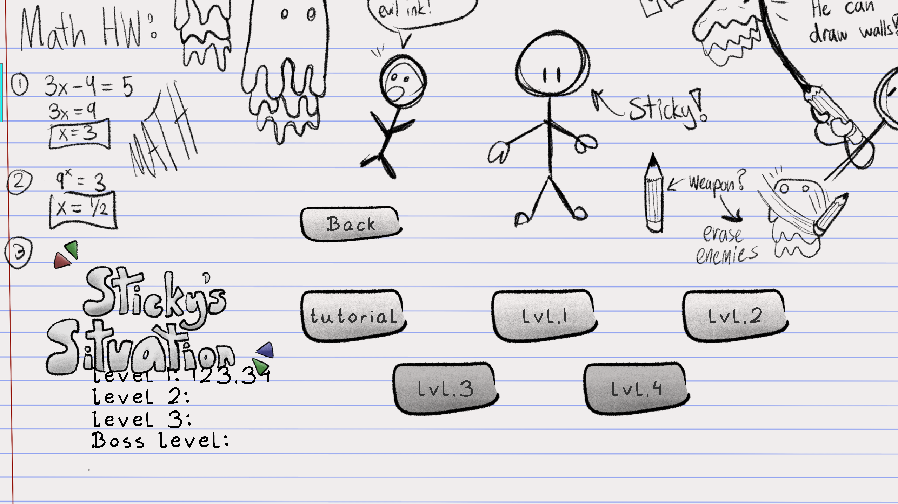

Flurry
Flurry is a reimagining of Qbert. I made this game as on of the projects for the
Carnegie Mellon National High School Game Academy Precollege Summer program


Development Time: 2 weeks Team Size: 5 Game Engine: Unity
My Involvement
- Role: Programmer
- Things I did:
- - Implemented player movement
- - Implemented player abilities (shoot, grapple, shield)
- - Implemented dialogue system within the game
- - Designed/implemented main menu and level selection screen
- - Implemented final boss
Retrospective
- Overall, the project went very well. Although there were a few bugs in the final build, the game was silly and still fun to play.
- Looking back, there were several aspects that could have been improved. While the movement was intended to use active ragdoll mechanics, it ended up being too floppy and frequently caused errors, such as the player’s feet getting stuck in walls. The grapple hook, was too stiff and cause a log of jittering when being used. Much of the user interface appeared warped due to insufficient testing across different window sizes. The story of the game was also hard to follow. The story was delivered through dialogue, which felt disconnected from the gameplay and lacked immersion. As a result, the narrative and gameplay didn’t tie together very well.
- The team had to work entirely remote due to the Covid-19 shelter-in-place order. However, there were no miscommunications regarding the programming or the overall vision of the game.
- If I were to remake the game from scratch, I would dedicate more time to polishing the mechanics and addressing bugs early on. At the time, I wasn’t familiar with useful tools like singletons, custom events, or scriptable objects, all of which could have helped organize the code better and improve performance.